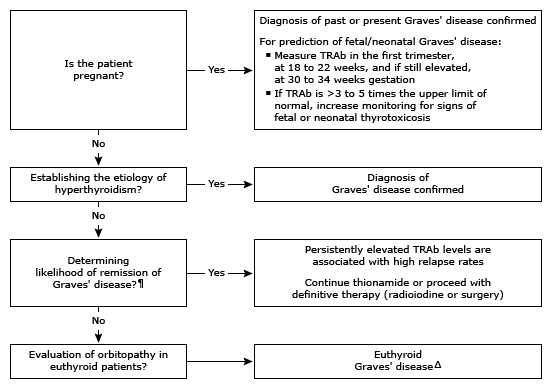

Initial evaluation of high thyrotropin receptor antibody in adults*

This algorithm is intended for use with additional UpToDate content on thyroid antibodies.
TRAb: thyrotropin receptor antibody; TSI: thyroid-stimulating immunoglobulin; TSH: thyroid-stimulating hormone. * The normal reference range for TSI, expressed relative to non-Graves' sera, is either 1±0.3 or 100±30%. The normal reference range for TSH receptor-binding inhibitor immunoglobulin (TBII or TBI) is assay dependent. Interpretation of a specific abnormal test result should be based upon the reference range reported with that result. ¶ In euthyroid patients treated with a thionamide (eg, methimazole) for 12 to 18 months, measurement of TRAb during treatment with the thionamide is used to predict the likelihood of remission of the underlying Graves' disease. Δ Some patients with thyroid-associated orbitopathy have normal thyroid function and elevated TRAb (euthyroid Graves' disease). While some patients go on to develop typical Graves' hyperthyroidism over a period of years, some become hypothyroid and others remain euthyroid.